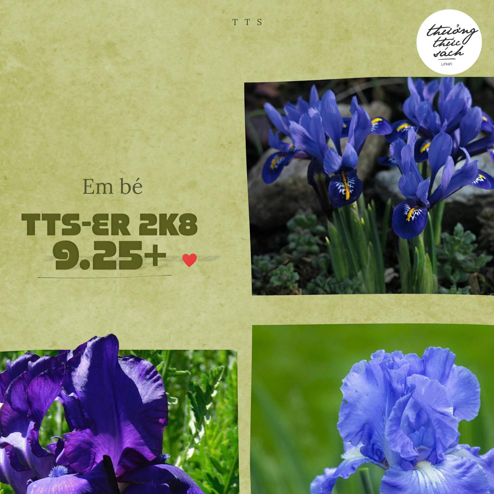
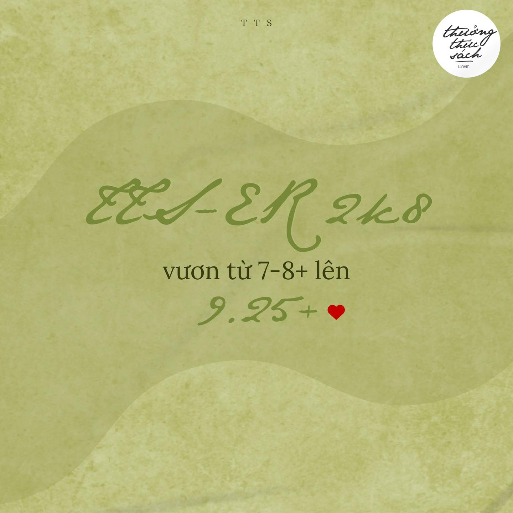

Võ Phạm Trúc Linh
Văn chương không chỉ là những con chữ, đó là sự thưởng thức tâm hồn. Qua góc nhìn của Võ Phạm Trúc Linh, những tác phẩm kinh điển trở nên gần gũi và đầy sức sống. Đây là không gian để chúng ta cùng dừng lại, lắng nghe hơi thở của ngôn từ.

